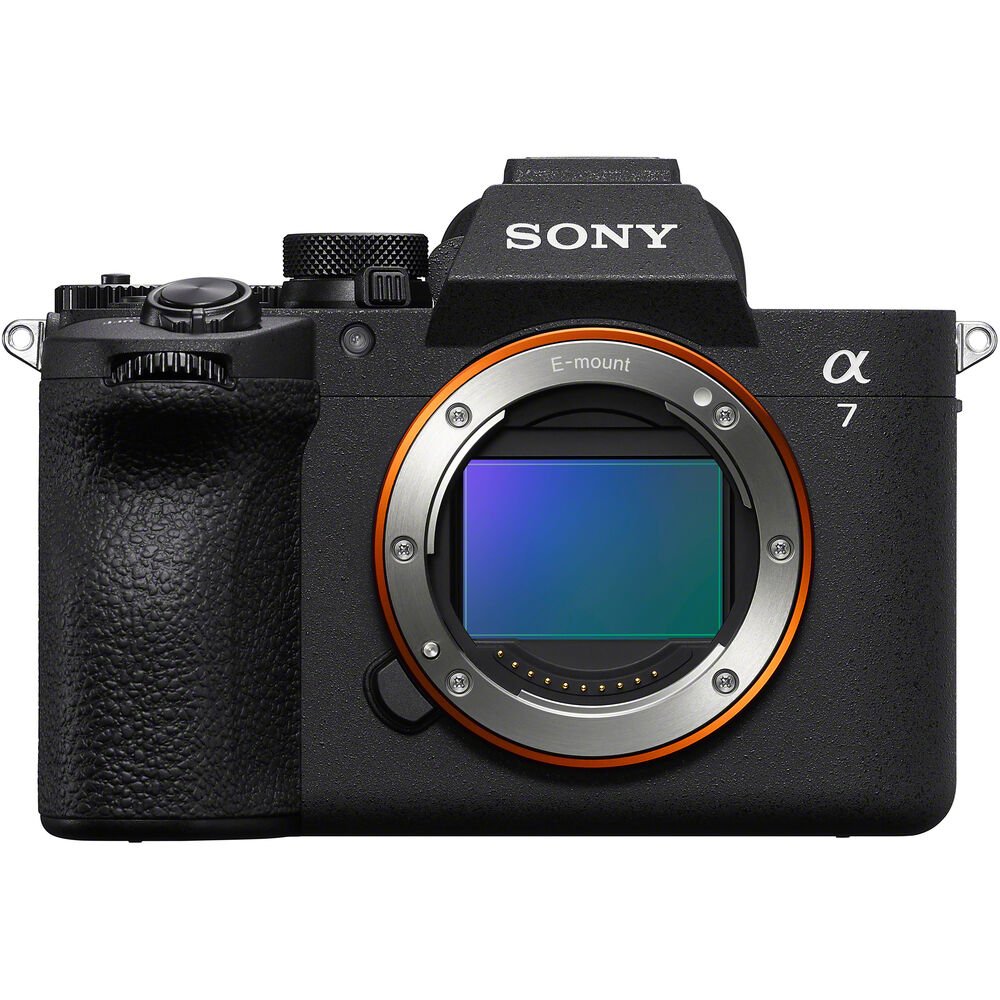
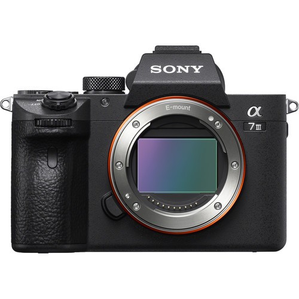
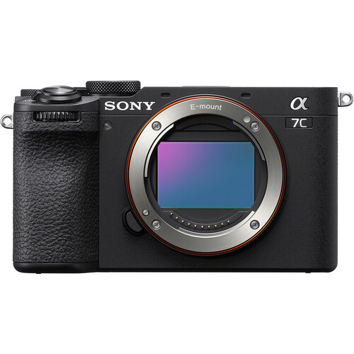
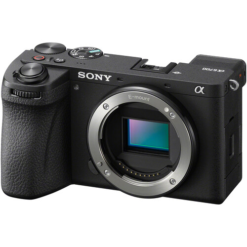

Sony A7 V

Sony a7 V — это полнокадровая беззеркальная гибридная камера среднего класса с разрешением 33 мегапикселя, оснащенная частично многослойной BSI-CMOS матрицей и выделенным ИИ-процессором для автофокуса.

Sony a7 V — это полнокадровая беззеркальная гибридная камера среднего класса с разрешением 33 мегапикселя, оснащенная частично многослойной BSI-CMOS матрицей и выделенным ИИ-процессором для автофокуса.

Sony a7S III — полнокадровая беззеркальная камера, созданная Sony для профессиональной видеосъемки и работы в условиях низкой освещенности. Буква S в названии означает Sensitivity.

Sony A7C II — полнокадровая беззеркальная камера нового поколения, которая предлагает возможности современных полнокадровых камер в компактном и легком корпусе.

Sony A6700 — беззеркальная камера с матрицей APS-C, объединяющая возможности съемки фотографий и профессионального видео.

Sony FX3 — полнокадровая цифровая кинокамера из линейки Cinema Line. Она предназначена для операторов, создателей контента и профессионального видеопроизводства.
| Камера | Цена за сутки |
|---|---|
| Sony A7 V | 18 000 ₸ |
| Sony A7S III | 19 000 ₸ |
| Sony A7C II | 12 000 ₸ |
| Sony A6700 | 9 000 ₸ |
| Sony FX3 | 20 000 ₸ |